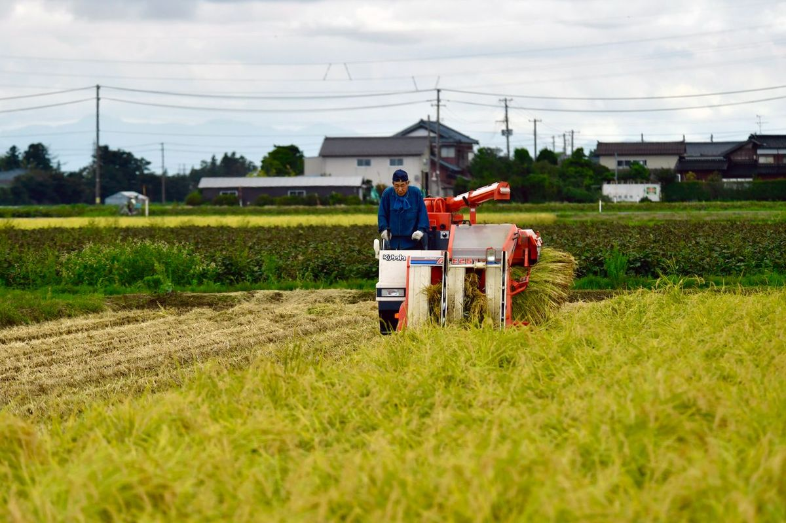
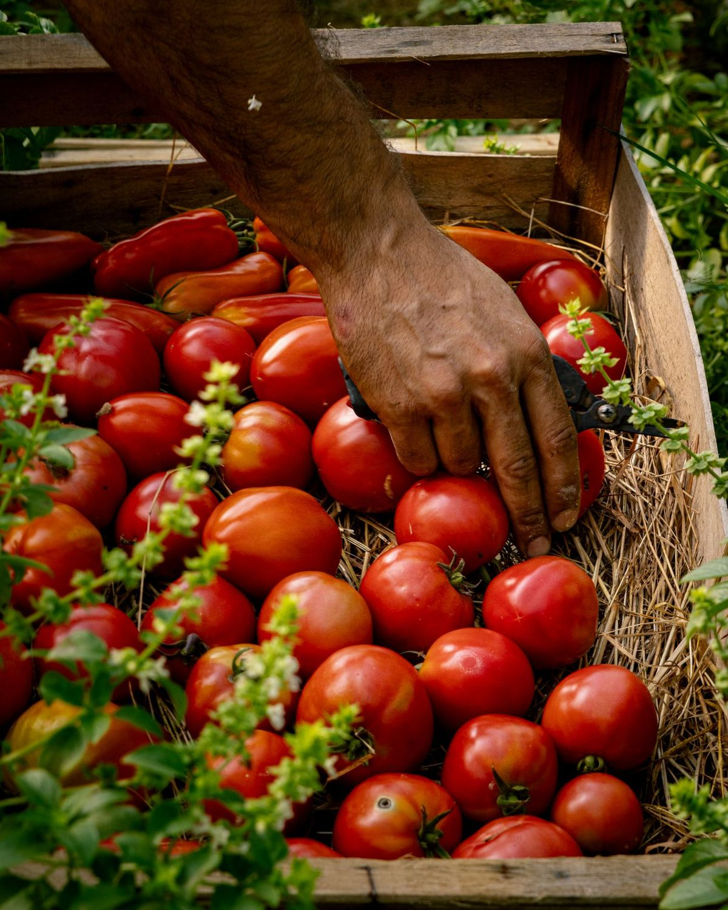
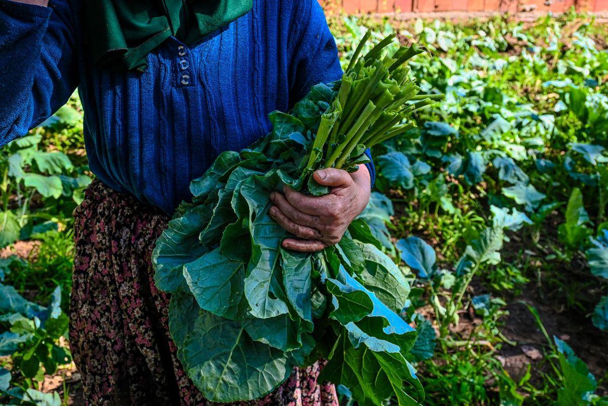
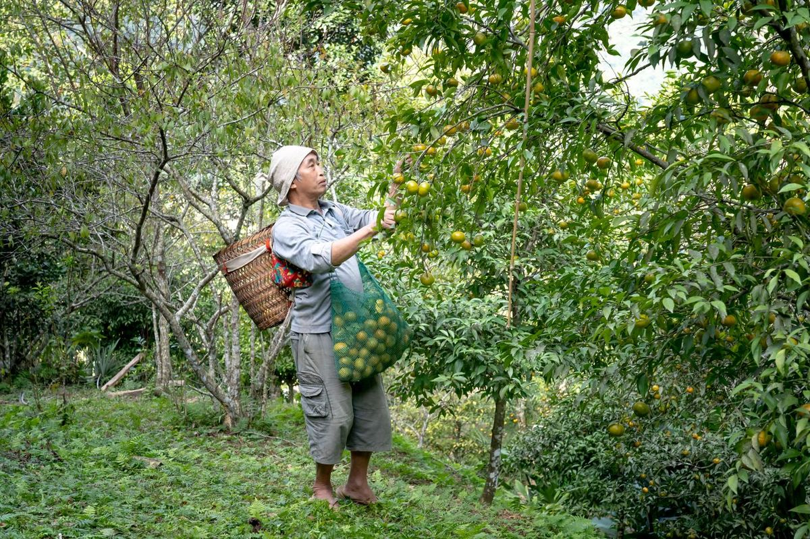
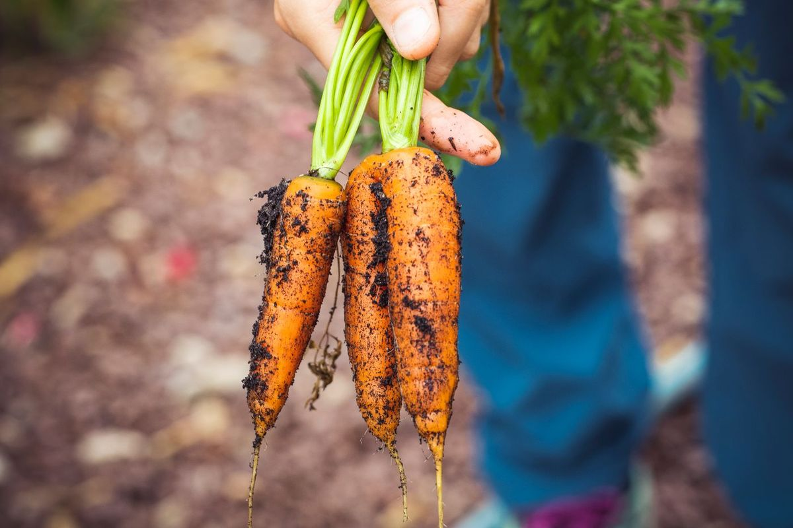
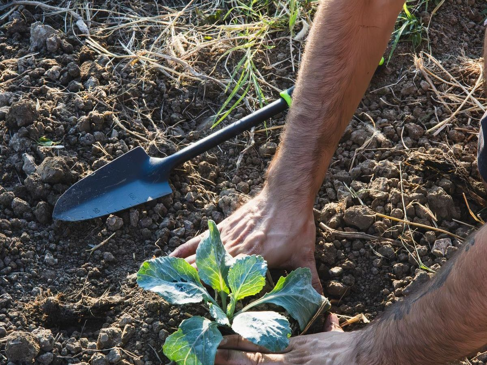

思
農家の、思い。
棚に並ぶ野菜の向こうには、育てた人がいます。畑のこと、朝採りのこと、食べる人のこと。やさい畑に出荷する農家の言葉を、ひと筆の書に託しました。
やさい畑
直売所の棚には、ひとつひとつ、名前が書いてあります。
その名前の人が、どんな顔で、どんなことを思いながら畑に立っているのか。
ここでは、そのほんの一部をご紹介します。

土に、
うそはつけん。
01 — Rice
肥料をやりすぎても、手を抜いても、稲はちゃんと見とる。うまい米は、正直な土からしかできんとです。
南関の水と、朝晩の寒暖差。それがあれば、あとは毎日、田んぼば見て回るだけ。特別なことはしとらんばってん、手は抜かん。それだけは、ずっと守っとります。
米米農家 ／ 南関町

朝採りの、
まんま。
02 — Tomato
夜明け前に畑に出て、いちばん赤いのだけ選んで、その足でお店に持ってくる。冷蔵庫に入る前のトマトの匂い、知っとる人は少なかでしょう。
それを、そのまま食べてほしか。塩もかけんで、まずはひとくち。それで「あ、違う」て思ってもらえたら、朝早く起きた甲斐があります。
菜トマト農家 ／ 小原

食べる人の顔を、
思い浮かべて。
03 — Leafy Greens
市場に出しよった頃は、誰が食べるか分からんかった。今は、袋に自分の名前ば書いて、棚に並べる。
「あんたのほうれん草、うまかったよ」て、店で声をかけてもらえる。それが、どんな肥料よりも効くとです。次はもっとよかもんば、て思う。
葉葉物野菜農家 ／ 南関町

がまだして、
育てとります。
04 — Citrus
山の斜面で、一本一本、手で摘む。楽な仕事じゃなかばってん、木は毎年ちゃんと応えてくれる。
「がまだす」は、熊本のことばで精を出して働くこと。この言葉が似合う畑でありたかと思って、今日も山に登っとります。
果果樹農家 ／ 南関町

不揃いも、
畑の顔。
05 — Root Vegetables
曲がった大根も、ひび割れたにんじんも、味は変わらん。むしろ、そういうのが甘かったりする。
見た目より、中身。直売所じゃけん、そのまま出せる。そのぶん値段も抑えられるけん、お客さんにも、畑にも、ちょうどよかとです。
根根菜農家 ／ 南関町

また、畑で
会いましょう。
06 — Seedlings & Flowers
苗を買っていったお客さんが、「あの苗、実がなったよ」て写真ば見せに来てくれる。
うちの畑が、よそんちの庭に広がっていくごたる気がして、うれしかとです。次の季節も、また畑で会いましょう。
苗苗もの・花農家 ／ 南関町
畑